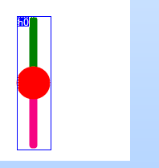
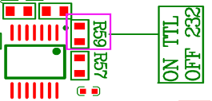
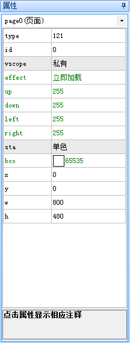
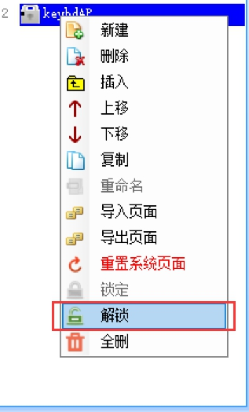
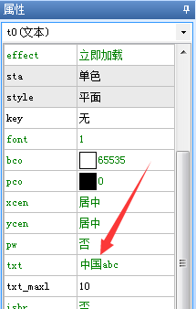
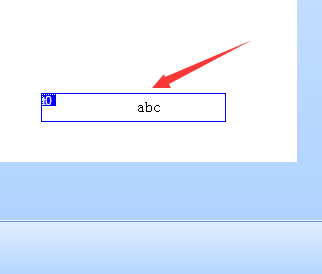
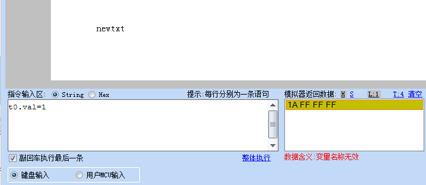
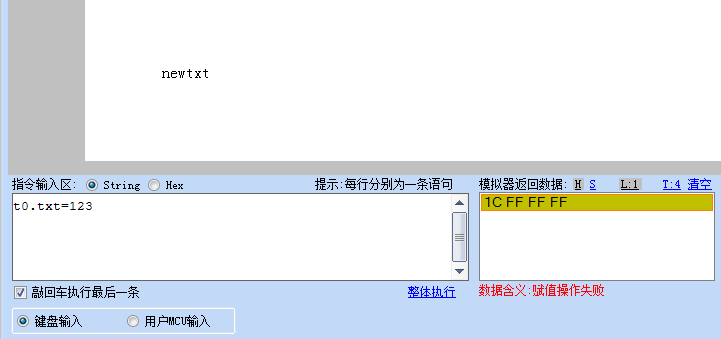

指令详解
Instruction_interpretation_
Instruction_interpretation_
Instruction_interpretation_
Instruction_interpretation_
Instruction_interpretation_
Instruction_interpretation_
Instruction_interpretation_
Instruction_interpretation_
Instruction_interpretation_
Instruction_interpretation_
Instruction_interpretation_
Instruction_interpretation_
Instruction_interpretation_
Instruction_interpretation_
Instruction_interpretation_
Instruction_interpretation_
Instruction_interpretation_
Instruction_interpretation_
Instruction_interpretation_
Instruction_interpretation_
Instruction_interpretation_
Instruction_interpretation_
Instruction_interpretation_
Instruction_interpretation_
Instruction_interpretation_
Instruction_interpretation_
Instruction_interpretation_
Instruction_interpretation_
Instruction_interpretation_
Instruction_interpretation_
Instruction_interpretation_
Instruction_interpretation_
Instruction_interpretation_
系统键盘使用说明
【目录】
一、系统键盘-概述
1.1、系统键盘是默认存放工程内，不调用不会占用工程内存。
1.2、控件调用系统键盘，点击控件将会弹出系统键盘。
二、系统键盘-使用说明
2.1、控件调用系统键盘
将控件vscope属性设置为全局，key属性选择相应的键盘。
调用键盘后默认导入相关字库资源文件
在页面窗口最下面页面生成相应键盘界面，默认键盘是上锁的，如果对键盘界面修改或者键盘里面功能进行修改，可以点击页面键盘右键解锁它并做相关的修改。如果不小心对键盘做了不必要的修改，可以右键重置键盘，键盘将会恢复默认键盘最初始的设置状态。
2.2、支持系统键盘的控件
文本控件、数字控件、虚拟浮点数控件、滚动文本控件、滑动文本控件。
2.3、常见系统键盘修改使用
2.3.1、进入系统键盘将输入框清空
在系统键盘页面的后初始化事件配置input.txt=””
2.3.2、在系统键盘设置好参数通过串口发送出去
1.解锁键盘页面（页面默认在软件右上角）
2.编辑ok按钮的弹起事件，在page指令前加上prints input.txt,0语句。
注意
page指令之后的指令是不会被执行的，因为已经跳转到别的页面了。
2.3.3、不同控件在系统键盘设置好参数存储到用户存储区
1.设置一个全局变量，在需要系统键盘存储到用户存储区的控件按下事件对全局变量赋值（不同的控件赋值不一样）。
2.在系统键盘页面，编辑ok按钮的弹起事件。
①存储变量类型为val
注意
page指令之后的指令是不会被执行的，因为已经跳转到别的页面了。
②存储变量类型为txt
注意
page指令之后的指令是不会被执行的，因为已经跳转到别的页面了。
默认show文本控件txt_maxl设置为32，会占比较大eeprom存储空间。
2.3.4、自定义键盘
基于官方的键盘进行更改
page到键盘页之前，先对键盘页的loadgageid.val和loadcmpid.vid赋值就可以了（一般是文本控件或数字控件和弹起或按下事件中进行赋值，页面名.loadpageid.val=dp，页面名.loadcmpid.val=当前控件的id），其他的逻辑会自动实现,loadpageid.val表示调用页的页面ID,loadcmpid.val表示调用页的控件ID。
注意
正常情况下控件设置将控件vscope属性设置为全局，key属性选择相应的键盘就好。
2.4、系统键盘页面常用控件和变量说明
①变量loadpageid.val表示调用页的页面ID。
②变量loadcmpid.val表示调用页的控件ID。
③定时器tm0是让输入框有个光标不断闪烁，如果不需要，控件属性en=0即可。
④变量inputlenth获取正在使用系统键盘控件字符最大长度。
⑤变量input表示输入的数据。
⑥变量show表示键盘显示的数据。
⑦按钮b249是让键盘输入框变成*显示。
三、系统键盘使用过程中常见问题
1.系统键盘无法用输入法打出汉字
可能原因1：工程设备字符编码设置为utf-8，utf-8不支持输入法打出汉字
解决办法：将工程设备字符编码设置非为utf-8字符编码。
可能原因2：输入法键盘没有切换成输入法
解决办法：将系统键盘切换成中文输入法，此时下方的按钮显示为”英”。
可能原因3：输入的字符无法拼音构成汉字，例：”www”
解决办法：输入的字符为拼音可构成汉字。例：”wen”，”ni”。
2.系统键盘无法输入字符
可能原因：在调用键盘前读取了eeprom中的数据，eeprom并没有初始化，里面存储随机值中有非法字符导致输入框被填满且无法显示。
解决办法：第一次开机通过代码对eeprom进行一次初始化
1for(sys0=0;sys0<1021;sys0++)
2{
3 wepo 0,sys0
4}
可能原因：修改键盘部分代码，导致键盘功能失效了。
解决办法：在页面窗口，右键系统键盘页面重置系统页面。
3.控件调用系统键盘输入值后，控件又回到默认值
可能原因：数据输入时是通过切换页面调用系统键盘，当输入完数据会再次回到控件的页面，此时会再次执行页面初始化事件，初始化事件的赋值会对控件重新赋值，这样就会好像控件回到默认值（复位）一样，导致调用系统键盘给控件赋值无效。
解决办法：
①不要在此控件页面初始化事件里给控件赋初始值，可以专门做一个用来上电赋初始值的页面，做为上电默认页，在此页面的初始化事件里完成所有的初始化动作之后，再切换到工程主页，这样初始化动作就只会上电执行一次，不会重复执行。
②在数据输入页面建一个变量（设置全局），用来表示是否已经初始化过了，赋初始值的时候判断控件是否已经被初始化过，是的话就不要再赋初值了，这样键盘调用完之后再次回来就不会重复执行了。
4.控件调用系统键盘输入值后，其他控件又回到默认值
可能原因：数据输入时是通过切换页面调用系统键盘，切换页面的时候其他控件vscope设置为私有会释放内存，恢复为默认值。若其他控件不想恢复默认值，将它的vscope属性设置为全局就好了。